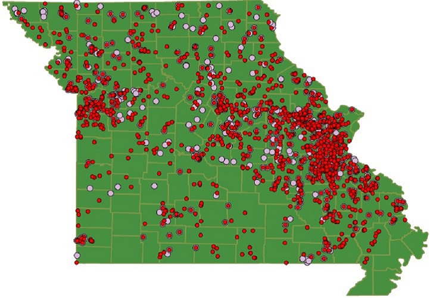
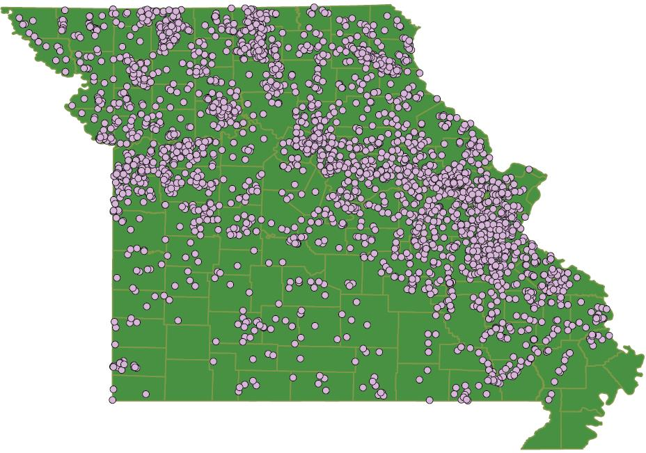
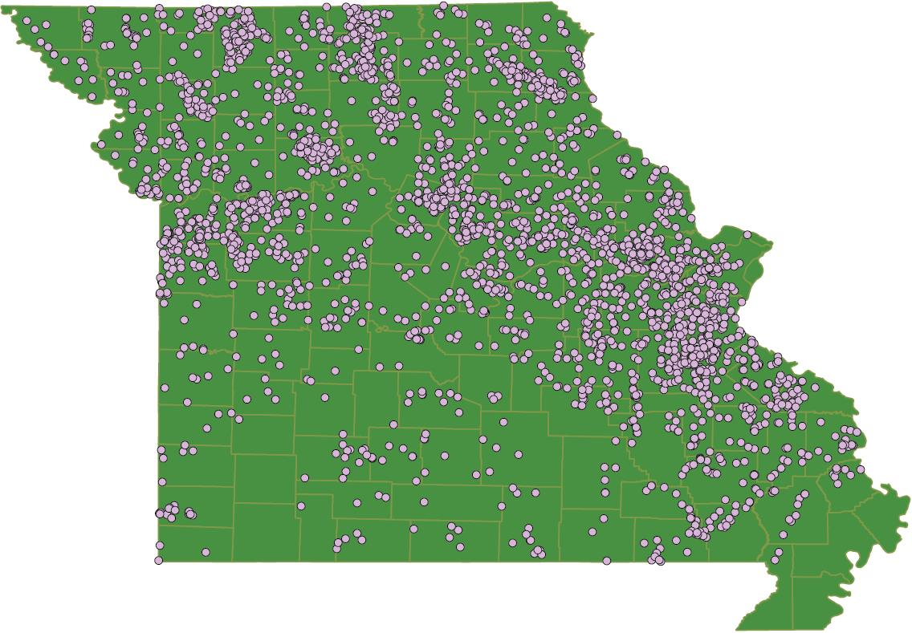

Missouri's hidden dams
Missouri has 1457 high-hazard dams last year, leading the nation since 2010. Nearly 1000 of them are unregulated. No one is required to inspect or repair them, even if the failure may kill people. Missouri dam law exempts the dams that are less than 35 feet tall, agriculture dams and federal-regulated dams. There has been no change in Missouri dam regulation since the 2005 Taum Sauk Dam Failure. Several bills tried to modify the dam safety law to increase the number of regulated dams, but none of them passed. Thus, around 4700 dams remain in limbo.
Hazardous dams in Missouri
Find the hazardous dams in Missouri. Missouri has 1457 high-hazard dams in 2016. Around 1000 high-hazard dams are not regulated. High-hazard means the failure of dams may kill people. Significant hazard means the failure of dams may cause property loss.
Dam Saftey Program in different states
Find the inventoried dams, state regulated dams and budget in Missouri and compare with other states. NID dams means the count of dams in the 2016 National Inventory of Dams (NID) database. Only 13% of dams in Missouri are regulated by the Department of Natural Resources, with a budget of around five thousand dollars in 2016.
What if the bills to strengthen dam regulation had been passed?
The state statutes exempt the dams that are less than 35 feet tall, agriculture dams and federal-regulated dams. Red circles represent high-hazard dams while pink circles represent regulated dams. Currently only 697 dams are regulated in Missouri.
If SB 1236 sponsered by Kevin Engler had been passed in 2007, regulated dams would have increased to 2838.
If HB 1994 sponserd by Walt Bivins had been passed in 2008, regulated dams would have increased to 2747.
However, Missouri Farm Bureau Federation & Missouri Land Improvement Contractors Association opposed to the bills to modify the dam safety law. The current state statutes exempt the agriculture dams. The last proposal to strengthen dam regulation failed in 2009.